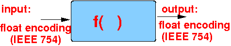

- Consider the following
function definition:
float f(float x) { return x*x; } - This function definition
defines a
black box:
 Specifically:
- The parameter definition:
float f(float x) { return x*x; }means:
- The function
will
require
an
input value in
the float encoding
(= in IEEE 754 code)
If you need to refresh on the IEEE 754 code, see: click here
- The function
will
require
an
input value in
the float encoding
(= in IEEE 754 code)
- The return type:
float f(float x) { return x*x; }means:
- The function will return a value is encoded using the float encoding (= IEEE 754)
- The parameter definition:
- Another example:
int g(int a) { return a*a; }means:
- The function g( )
will
require an
input value
in the 2s complement encoding
- The function will return a value is encoded using the 2s complement encoding
- The function g( )
will
require an
input value
in the 2s complement encoding
- Extremely important fact:
- Computer uses
different codes to
represent
different types of
values
Example:
int x = 2 Binary number (code) in x = 00000000000000000000000000000010 float y = 2; Binary number (code) in y = 01000000000000000000000000000000 It's a IEEE 754 code: 0 10000000 00000000000000000000000 (exponent)
Here is a C program that shows the binary representation of the values stored in int and float variables:
#include <stdio.h> int main(int argc, char *argv[] ) { int a = 2; float b = 2; printf("int %d representation in bits: ", a); printBits(&a); // Ignore the definition of this function for now... printf("\n\n"); b = 2; printf("float %2.0f representation in bits: ", b); printBits(&b); printf("\n\n"); } /* ------------------------------------------------------ Print bit representation (Ignore this function for now; it uses some advanced pointer stuff this will be discussed later) ------------------------------------------------------- */ void printBits( void *ptr ) { int x = *((int *)ptr); int i; for ( i = 31; i >= 0; i-- ) { if ( (x & (1 << i)) != 0 ) printf("1"); else printf("0"); } }Output:
int 2 representation in bits: 00000000000000000000000000000010 float 2 representation in bits: 01000000000000000000000000000000
This is exactly what you have learned in the first part of CS255 !!!
- Computer uses
different codes to
represent
different types of
values
- Example Program:
(Demo above code)

- Prog file: /home/cs255001/demo/C/set1/data-repr1.c
How to run the program:
- To compile: gcc data-repr1.c
- To run: ./a.out
- Consider the following
function call to
float f(float x):
float f(float x) { return x*x; } int main( int argc, char* argv[ ]) { .... b = f(a); }This is what happens in the function call b = f(a):
- The compiler
must make sure that:
b = f( a );the value of parameter a is encoding using float (IEEE 754)
- The compiler will perform a type conversion operation if necessary !!!
- The compiler must
also make sure that:
b = f( a );the return value of f( ) is converted to the data type of the variable b !!!
- The compiler will perform a type conversion operation if necessary !!!
- The compiler
must make sure that:
- I will illustrate the
conversion that
happens in a
function call in the
next web page
I will also high light the difference in behavior between C and Java....